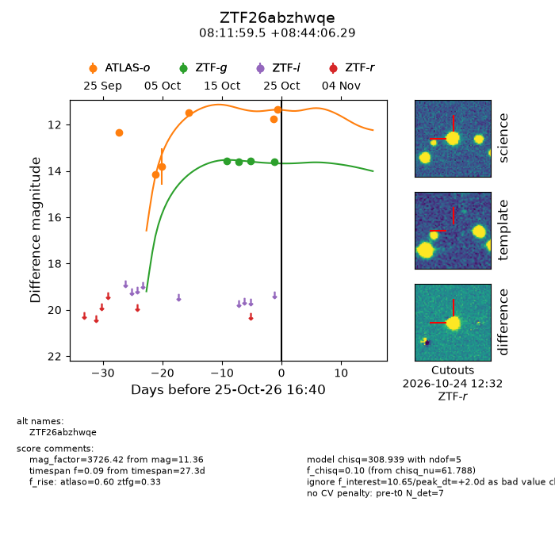
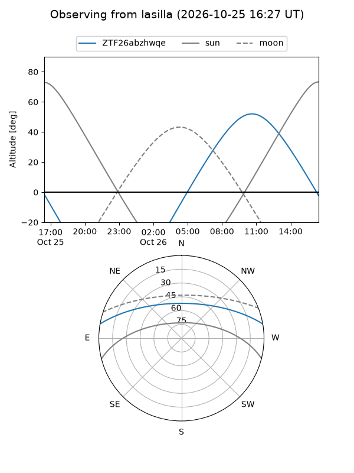
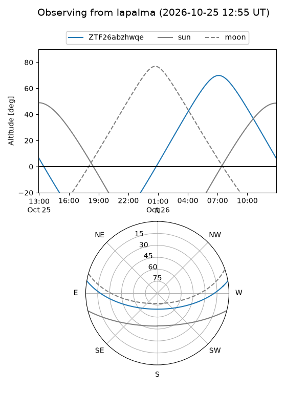
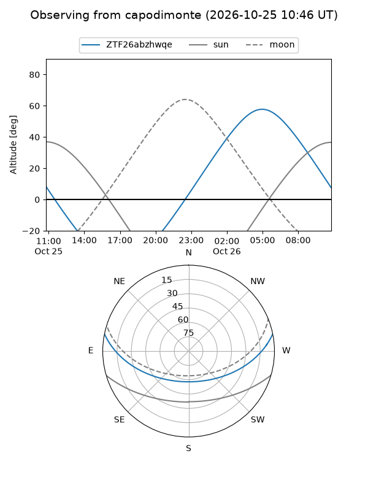
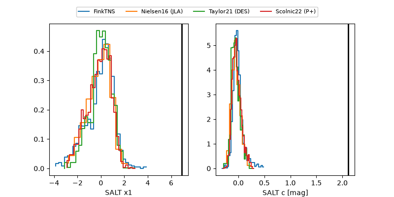

ZTF26abzhwqe
Target ZTF26abzhwqe at 2026-10-25 16:41
Aliases and brokers:
FINK-ZTF: ztf.fink-portal.org/ZTF26abzhwqe
Lasair-ZTF: lasair-ztf.lsst.ac.uk/objects/ZTF26abzhwqe
ALeRCE-ZTF: alerce.online/object/ZTF26abzhwqe
Direct TNS query: direct search
alt names
ZTF26abzhwqe (ztf,fink_ztf)
Coordinates:
equatorial (ra, dec) = 122.9980,+8.73508
equatorial (HMS+DMS) = 08:11:59.52,+08:44:06.29
galactic (l, b) = (214.1673,+21.84576)
Flags:
peak dt: +2.0
Photometry:
last atlaso=11.36, ztfg=13.61
6 atlaso, 4 ztfg detections
Lightcurve

Visibility



Additional plots
